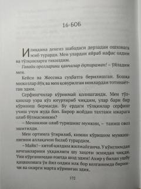

YCJonning o'n yildan so'ng qahvaxonaga qaytishi va hayotiy suhbatlari haqidagi falsafiy hikoya.
Asar bosh qahramon Jonning o'n yil avval tashrif buyurgan qahvaxonaga qaytishi va u yerdagi tanishlari bilan uchrashuvini tasvirlaydi. Qahramonlar hayotiy tajribalar, o'zgarishlar va kelajakdagi maqsadlar haqida samimiy suhbat qurishadi.